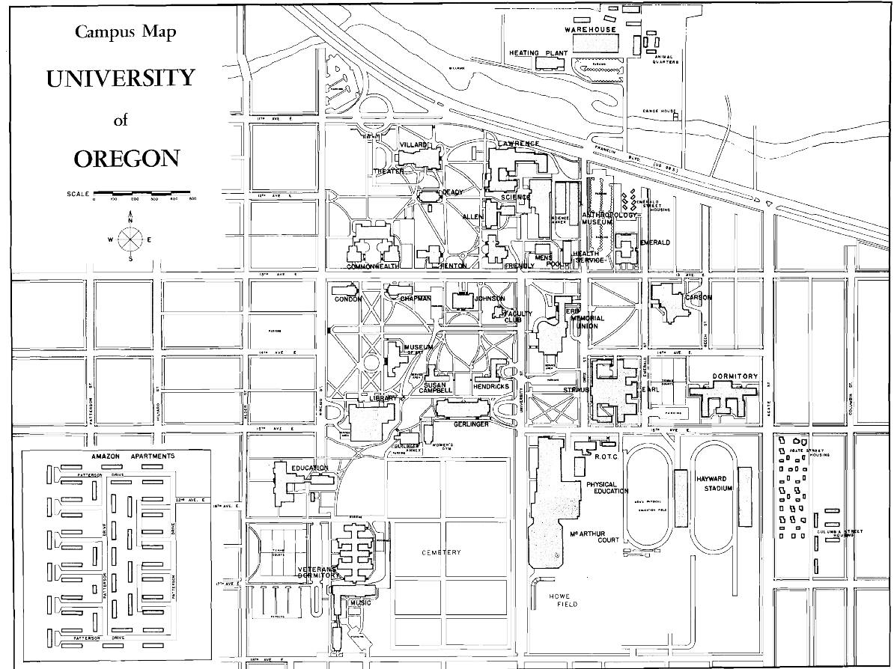

1876
The State University Building (Deady Hall) opened. Architect: William W. Piper.
1881
Increasing debts gave rise to the idea of selling the university.
Henry Villard, financial and railroad entrepreneur, donated substantial funding --enough to pay
off debts and to establish an endowment.
1885
The Normal Gate, an ornamental arbor crafted from wrought iron, was given to UO.
1886
Collier House, owned by Physics professor George Collier, was completed in May 1886.
Villard Hall. Architect: Warren H. Williams.
1889
Astronomical Observatory. Architect: Warren H. Williams.
Gymnasium. Architect: W. L. Campbell.
1893
The "Old Building" was named Deady Hall.
Dormitory (named Friendly Hall in 1915). Architect: Whidden and Lewis.
1896
Collier House was purchased by UO.
1900
McClure Hall. Architect: Rolph H. Miller.
The first fraternity, Sigma Nu, was established.
The Associated University of Oregon Students (ASUO) was organized.
Student newspaper was called the Oregon Weekly.
1901
Mechanical Hall. Architect: Edgar Lazarus
1902
Prince Lucien Campbell began his 23 years as UO's 4th president.
First yearbook, the Webfoot, published.
1903
First manned air flight, by Wright Brothers, at Kitty Hawk, N. C.
1904
Kappa Sigma Fraternity built a house on the Millrace at 11th and Alder.
First sorority (later Kappa Alpha Theta) organized.
University Day. Conceived by UO President Prince Lucien Campbell as a constructive way to channel student energies.
1905
Kincaid Field was built.
1906
"Carson's Lake" opens.
The Library (Fenton Hall). Architect: Yousta D. Hensil..
San Francisco Earthquake. A major earthquake struck San Francisco and large portions of the West on April 18, 1906.
1908
The first "O" was sited on Skinner's Butte.
1909
Mary Spiller Hall. Architect: Yousta D. Hensil.
Men's Gymnasium. Architect: John Hunzicker.
Engineering Hall. Architect: Percy Adams.
1912
Sundial arrives and is originally sited near what is now Johnson Hall.
A large bronze seal of the University of Oregon, a gift of the Class of 1912, is laid at the north entrance of Villard Hall.
1913
Class of 1913 Fountain is dedicated.
1914
Architecture Building. Architect: William C. Knighton.
Library Addition. Architect: William C. Knighton.
Campus Planning: The first long-range UO Campus Plan is created. Architect: Lawrence & Holford.
1915
Administration Building (Johnson Hall). Architect: William C. Knighton.
1916
Education Building. Architect: Lawrence & Holford.
An annex to McClure Hall was built to house University Press.
Women's Open Air Gymnasium. Architect: Lawrence & Holford.
1918
Hendricks Hall. Architect: Lawrence & Holford.
1919
The Pioneer. Artist: Alexander Phimister Proctor.
Hayward Field East Grandstand.
1920
The firm Lawrence & Holford, with Ellis F. Lawrence the principle designer, designed all UO buildings during the 1920s.
19th amendment to Constitution, enabling women the right to vote, was ratified.
1921
Woman's Memorial Hall. (Gerlinger Hall). Architect: Lawrence & Holford.
University High School (Education Building). Architect: Lawrence & Holford.
Education Building. Architect: Lawrence & Holford.
Open Air Gymnasium. Architect: Lawrence & Holford.
Commerce Hall. Architect: Lawrence & Holford.
Susan Campbell Hall. Architect: Lawrence & Holford.
1922
Kincaid Field grandstands (1905) (near current Museum of Art) were torn down.
The Old Gymnasium (at that time, the Women's Gym) was destroyed by fire.
1923
Journalism Building. Architect: Lawrence & Holford.
Friendly Hall Renovation. Architect: Lawrence & Holford.
Campus Planning: UO Campus Plan. Architect: Lawrence & Holford.
Gift Campaign Building. Architect: Lawrence & Holford.
Architecture and Allied Arts Building. Architect: Lawrence & Holford.
1924
Music Building. Architect: Lawrence & Holford.
The Power Plant and University Depot. Architect: Lawrence & Holford.
1925
Condon Hall. Architect: Lawrence & Holford.
Hayward Field West Grandstand. Architect: Lawrence & Holford.
Press Building. Architect: Lawrence & Holford.
1926
McArthur Court. Architect: Lawrence & Holford.
1928
John Straub Memorial Building (Men's Dormitory). Architect: Lawrence & Holford.
1929
May 1929: Construction begins on the Museum of Art.
1930
Collier House barn (Barn Hall) is razed.
Museum of Art construction ends. Architect: Lawrence, Holford, Allyn, and Bean.
1931
Museum of Art opens.
Pioneer Mother. Sculptor: Alexander Phineas Proctor.
1932
Campus Planning: The Public Works Administration.
The PWA and its related art programs funded UO's building program from the mid-1930s to the end of the decade.
1934
Clarence B. Valentine becomes 6th UO president.
See the campus in 1934, in this documentary film, Jesse G Sill Presents: Know Your Pacific Coast Colleges: - Number 1 - University of Oregon at Eugene, Oregon
1935
Drill Hall is destroyed to make room for the new Infirmary. Construction begins on the Library and Infirmary.
Hayward Field West Grandstand Expansion and Alteration. Architect: Lawrence & Holford.
1936
Bas Relief (1936) by Louise G. Utter is placed over south entrance of Journalism Building.
The Library (Fenton Hall) Renovation. Architect: Lawrence, Holford, Allyn.
Physical Education Building (Esslinger Hall). Architect: Lawrence, Holford, Allyn.
Infirmary (now Volcanology). Architect: Lawrence, Holford, Allyn.
1937
Library (now called Knight Library). Architect: Lawrence, Holford, and Allyn.
1939
Landscape: Eight Pyramidal English oaks were planted nearby the Library and Art Museum.
Chapman Hall. Architect: Lawrence, Holford, Allyn
1941
Dad's Gates were dedicated in January.
The December 7, 1941, attack by Japan on Pearl Harbor provoked the US to declare war and engage in WWII.
Quonset Huts arrive on campus.
1943
The Southern Pacific Railroad began running on relocated tracks, on the north side of Franklin Blvd.
1945
Enrollment for fall jumped 47% to 2,453 compared to 1,664 in 1944.
A major housing and classroom space shortage resulted.
Parts of Gerlinger and Villard were
remodeled to provide housing. Fraternities started to reopen.
1946
Ellis F. Lawrence died on Feb. 17 at Collier House. He had a room in Collier House from 1942 until his death.
Physical Plant Shops. (Cascade Annex). Architect: Ellis F. Lawrence.
Trailers and prefab housing arrive to accommodate post-war demands.
1947
Columbia (Columbia St.) and Amazon (22nd and Patterson) housing projects are created for married students.
Marion Dean Ross arrived at UO to teach the history of architecture. Ross became one of the first scholars to document Oregon's architectural history. Ross was a
principal founder of the regional chapter of the Society of Architectural Historians, which celebrates its 50th anniversary in Eugene, in 2004. In 1992 Ross left a
bequest of over one million dollars for a library acquisitions which is used today to buy rare architectural books.
Veterans Memorial Dorms I and II are constructed.
1948
A surplus in the state budget motivated UO to develop and seek approval of a long-range building program.
Central Power Plant. Engineer: J. Donald Kroeker (Portland).
Music Building South Addition. Architect: Wick, Hilgers and Scott.
1949
Carson Hall. Architect: Lawrence, Tucker, and Wallmann.
University Theater(now called Robinson Theater). Architect: Annand and Kennedy (Portland).
1950
President Newburn requires all freshmen to live in a dormitory.
Collier House garage is razed.
Library Addition. Architect: Lawrence, Tucker, and Wallman.
Erb Memorial Union. Architect:Lawrence, Tucker, and Wallman.
1951
Mary Spiller Hall, the first women's dorm, is torn down.
1952
Science Building (also known as Science I, Main Science; now Pacific Hall). Architect: Lawrence, Tucker, and Wallman.
Commonwealth Hall. Architect: Wick & Hilgers (Portland).
1953
Buckminster Fuller and architecture students construct a Geodesic Dome on campus.
McClure Hall is demolished to make way for the new journalism building, Allen Hall.
O. Meredith Wilson becomes UO's 9th president after Harry Newburn's resignation in 1953.
1954
Allen Hall. Architect: Church, Newberry, and Roehr.
Physical Education Building Additions. Architect:Lawrence, Tucker, and Wallman.
1955
Virgil D. Earl Hall (Earl Complex). Architect: Church, Newberry, and Roehr.
Music Building Addition. Architect: Wick and Hilgers.
1957
Architecture and Allied Arts Building Addition. Architect: Annand, Boone, and Lei, with contribution by AAA Dean Sidney Little.
New dormitory, the first units of what would be named Walton Hall, is completed in summer, 1957.
1958
Prometheus Unbound, a sculpture by Jan Zach, is given to UO by Gamma Phi Beta.
New dormitory is named Walton Hall.
1959
Leighton Pool opened.
Five units are added to Walton Hall.

1960
A 10-year building program was announced after a ballot measure passed.
Geology Building (now Columbia Hall). Architect: Lawrence, Tucker, and Wallmann.
Westmoreland Housing. Architect: Lutes and Amundsen. Wallace Ruff, landscape architect.
O. Meredith Wilson ends term as UO president.
1961
Onyx Bridge. Architect: Lawrence, Tucker, Wallman.
Arthur Fleming becomes UO's 10th president.
1962
Collier House Alteration. Architect: Wilmsen, Endicott, Unthank.
Hamilton Complex. Architect: Church, Newberry, Roehr, Schuette.
The remaining six World War II quonsets on campus were relocated north of Franklin Blvd.
Veterans Dorm II was torn down.
Landscape: The Columbus Day storm (Typhoon Frieda) struck on Oct. 12 .
1963
The College Side Inn was razed to make for the University Bookstore.
Use of Pioneer Cemetery land continues with planning options.
President John F. Kennedy is assassinated.
1964
Bean Complex. Architect: Wilmsen, Endicott, and Unthank.
Prince Lucien Campbell Hall (PLC). Architect: Stanton, Boles, Maguire and Church.
1966
Chapman Hall Alteration. Architect: Richard C. Clark.
College Inn (now University Inn).
(Knight) Library Addition. Architect: Clare K. Hamlin and B. King Martin.
Student Health Services Center. Architect: Balzhiser, Seder and Rhodes.
1967
Autzen Stadium. Architect: Skidmore Owings & Merrill.
Computing Center. Architect: Morin, Longwood, Eplund.
Condon Hall Addition. Architect: Stanton, Boles, Maguire, and Church.
Klamath Hall (originally called Science II). Architect: Skidmore Owings and Merrill.
1968
UO's efforts to acquire Pioneer Cemetery failed in the Legislature.
Arthur S. Flemming ends service as UO president.
Senator Robert F. Kennedy and Rev. Martin Luther King, Jr., are assassinated in 1968.
1969
Charles Johnson serves as acting UO president. He dies the same year. Robert Clark begins term as UO President.
Clinical Services Building. Architect: Balzhiser Seder & Rhodes (Seattle)
Gerlinger Annex. Architect: Morin and Longwood.
Balloon Field House was purchased to provide an inexpensive dry practice area for athletes.
1970
13th Avenue through UO is closed to regular traffic.
Autzen Footbridge.
Computing Center. Completed in 1967, the Center was expanded in 1970.
PLC is bombed; and Johnson Hall is overtaken by students.
The Physical Education (later named Esslinger Hall). Building partially burns, and is rebuilt.
Law Center (now McKenzie Hall). Architect: Wilmsen, Endicott, and Unthank.
1971
Covered Tennis Courts. Architect: Unthank, Seder and Poticha.
Lawrence Hall, North Addition and Renovation. Architect: Campbell Yost Grube Hall.
1972
Villard Hall and Deady Hall are added to the National Register of Historic Places.
1973
Erb Memorial Union West Addition. Architect: Coburn and Sheldon, Lutes and Amundsen.
Huestis Hall. Architect: Skidmore Owings Merrill.
1974
The Falconer appears on campus.
The sculpture Reflections on a Summer Day is given to UO.
Oregon Hall. Architect: Zimmer, Gunsul, Frasca.
1975
Commonwealth Hall is renamed James H. Gilbert Hall for economics professor and liberal arts dean from 1925-47.
The Physical Education Building is named Arthur A. Esslinger Hall.
Robert Clark ends tenure as UO president.
1976
William Boyd becomes UO's 13th president.
Oregon's Percent for Art Program is established, mandating art expenditures for certain public works.
Campus planning: Christopher Alexander's The Oregon Experiment (Oxford Univ. Pr., 1975) is published.
Kenneth Knapp's Trees of the Oregon Campus, University of Oregon at Eugene is published.
UO acquires Campus Inn, renamed it University Inn. In 2001, the building was renamed Barnhart Hall.
Sundial is rehabilitated and relocated to plaza to west of Huestis Hall.
1977
Villard Hall and Deady Hall are designated National Historic Landmarks.
Animal House is filmed on campus in the fall.
1978
Music Building Addition and Renovation. Architect: BOORA (Broome Oringdulph, O'Toole, Rudolf and Associates)
1980
Building Inactivity: The University of Oregon increasingly turned to fundraising for financial support.
The first Historic Preservation program west of the Mississippi was established in the School of Architecture & Allied Arts.
Education Addition (South Bldg, courtyard, covered walkway). Architect: Martin Soderstrom Matteson. Builder: John T. Moody & Sons.
Erb Memorial Union Renovation (Fishbowl Renovation). Architect: Eggleston, Reddick Associates.
Paul Olum became 13th president of UO.
1985
Johnson Hall is added to the National Register of Historic Places, June 20, 1985.
Planning begins on the new science complex (Cascade Hall, Deschutes Hall, Streisinger Hall, and Willamette Hall) which would add new buildings (Cascade Hall,
Deschutes Hall, Streisinger Hall, and Willamette Hall), integrate older ones (Onyx Bridge, Klamath Hall), and add others (Volcanology, Huestis) to a larger landscaped
unit.
1986
AAA Millrace I and II were completed.
Museum of Art was added to the National Register of Historic Places, June 5, 1986.
Chiles Business Center.
1987
Museum of Natural History. Architect: Ratcliff Architects.
Emerald Hall is demolished.
1989
Fundraising Initiatives.
The fundraising initiative "Campaign for Oregon" was inaugurated in 1989.
Miles Brand became UO president following Dr. Olum's resignation.
1990
The new Science buildings-- Cascade Hall, Deschutes Hall, Streisinger Hall, and Willamette Hall-- open for classes in 1990.
Library and Memorial Quadrangle were added to the National Register of Historic Places, March 9, 1990.
University Day (May 17) is revived.
1991
Bowerman Family Building.
Casanova Athletic Center. Architect: Amundson Associates.
Lawrence Hall Addition and Renovation. Architect: BOORA. (Portland, OR).
Campus Planning: A Campus Planning: A Long Range Campus Development Plan is established.
1992
Campus Planning: Christopher Ramey becomes Director, University Planning, and Architect.
The Women's Memorial Quadrangle Ensemble is added to the National Register of Historic Places.
1994
Dave Frohnmayer becomes UO's 16th president.
Knight Library Addition and Renovation. Architect: TBG Architects and Planners (Eugene); Shepley Bulfinch Richardson Abbott (Boston).
1996
McArthur Court Renovations. Architect: Soderstrom Architects.
Spencer View Family Housing replaced the WWII era Amazon Housing. Phase I opened in fall 1996.
1997
Spencer View Family Housing Phase II opens in the fall.
1998
Student enrollment reached 16,780 in fall 1998.
Erb Memorial Union Amphitheater. Landscape Architect: Cameron McCarthy Gilbert & Scheibe.
Moshofsky Sports Center. Architect: WBGS Architects & Planners (Eugene); Chambers Construction.
1999
William W. Knight Law Center. Architect: Yost Grube Hall.
Student Recreation and Fitness Center. Architect: TBG Architects (Eugene); Cannon-Parkin (Los Angeles). Construction: Hyland Construction.
UO Entrances completed. Landscape Architect: Cameron McCarthy Gilbert & Scheibe (Eugene).
2000
Campus Planning Committee approves UO Sustainable Development Plan. Planner: Christine Thompson.
Vivian Olum Child Development Center. Architect: De Norval Unthank. Design work began in 1999.
McKenzie Hall Renovation. Architect: SRG Partnership.
Student Indoor Tennis Center. Architect: TBG Architects.
2001
UO celebrates its 125th anniversary.
Allen Hall. Architect: Boucher Mouchka Larson Architects. Landscape Architect: Cameron McCarthy Gilbert. Planner: Chris Ramey. Manager: Alex Gordon.
Campus Tree Plan. Project Planner: Christine Thompson.
H. P. Barnhart Hall became the new name of University Inn.
Zebrafish Center dedicated on May 10.
2002
Akbar's Garden (sculpture) sited in Straub Quadrangle across from Erb Memorial Union.
Straub Hall Addition & Renovation. Architect: L. A. Kersh Architecture, Eugene.
In 2002, the 'O" was adopted as the University's logo.
2003
Autzen Stadium Renovation and Expansion.
Lillis Business Complex. Architect: SRG Partnership. Lease Crutcher Lewis Construction.
East Campus Area Development Policy. Planner: Christine Thompson.
2004
Heart of Campus. Architect: Stan Jones, UO Landscape Architecture students.
Living Learning Center. Architect: Zimmer Gunsul Frasca. Project Planner: Fred Tepfer. Manager: Alex Gordon.
Many Nations Longhouse. Architect: Johnpaul Jones Architects
Moss Street Children's Center. Architect: Mahlum Architects. Construction: Ordell. Planner: Dorene Steggell. Manager: George Bleekman.
Museum of Art Addition & Renovations. Architect: SRG Partnership with consultants Hammond, Beeby, Rupert, and Ainge (Chicago).
Museum of Natural and Cultural History renovation.
2005
The new Many Nations Longhouse opens with ceremony on Jan. 11, 2005.
Renovated and expanded Museum of Art opens to the public.
Renovated Museum of Natural and Cultural History hosts grand opening on Feb. 11, 2005.
UO acquires Williams Bakery site. Site has been considered as possible Arena location.
New Campus Plan replaces Long Range Campus Development Plan. Planner: Christine Thompson.
2009
Matthew Knight Arena groundbreaking
HEDCO Education Building opens, Spring 2009.
2010
Groundbreaking of Lewis Integrative Science Building takes place.
2011
Matthew Knight Arena opens
2012
Lewis Integrative Science Building has grand opening, October 26.
2015